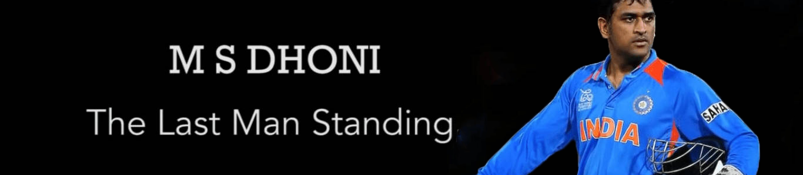

Personal Information
- Name: Mahendra Singh Dhoni
- Born: 7 July 1981 (age 35), Ranchi, Bihar, India
- Nickname: Mahi, MS, MSD, Captain Cool
- Height: 5 ft 9 in (1.75 m)
- Batting style: Right-handed
- Bowling style: Right-arm medium
- Role: Wicket-keeper batsman
International Information
- National Side: India
- Test debut: 2 December 2005 v Sri Lanka
- Last test: 26 December 2014 v Australia
- ODI debut: 23 December 2004 v Bangladesh
- Last ODI: -
- ODI shirt no.: 7
- T20I debut: 1 December 2006 v South Africa
- Last T20I: -
Domestic Team Information
| Years | Team |
|---|---|
| 1999/00 - 2003/04 | Bihar |
| 2004/05 - present | Jharkhand |
| 2008 - 2015 | Chennai Super Kings |
| 2016 - present | Rising Pune Supergiants |
Career Statistics
| Competition | Test | ODI | FC | T20Is |
|---|---|---|---|---|
| Matches | 90 | 285 | 131 | 73 |
| Runs scored | 4876 | 9250 | 7038 | 1112 |
| Batting average | 38.09 | 51.10 | 36.84 | 35.87 |
| 100s/50s | 6/33 | 10/61 | 6/47 | 0/0 |
| Top score | 224 | 183* | 224 | 48* |
| Balls bowled | 96 | 36 | 126 | - |
| Wickets | 0 | 1 | - | - |
| Catches/stumping | 256/38 | 269/94 | 364/57 | 41/22 |
